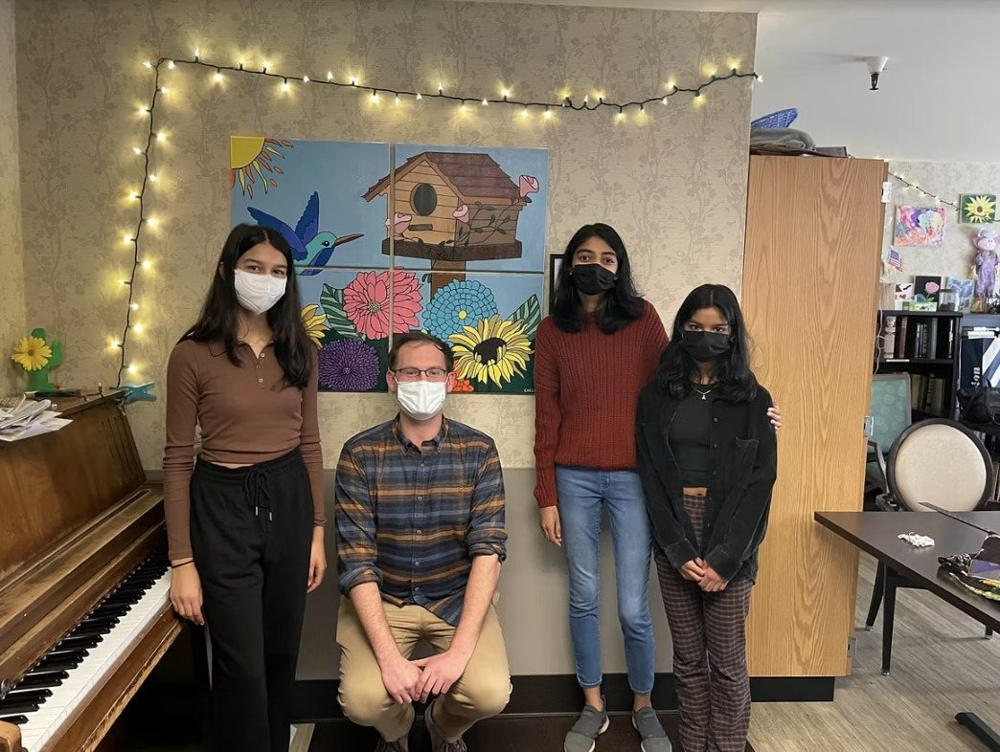
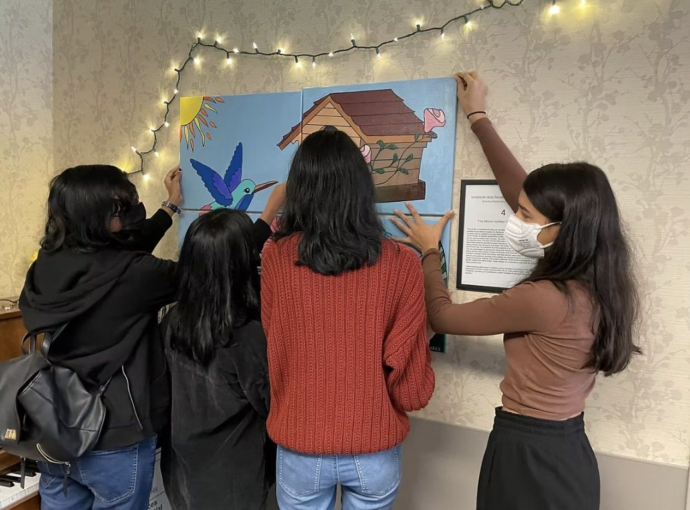

Windsor Healthcare Center
November 2021
Our officers delivered “Burst of Blooms” to Windsor Healthcare Center and hung it themselves, right on the wall by the piano.
A hummingbird, a birdhouse, and big sunflowers and dahlias: it was a bright new addition to the room.
We really appreciate the painting and all of the time spent to get things going. I liked your team's persistence with emailing, asking questions, and coordinating an estimated timeline for each step of the project.

